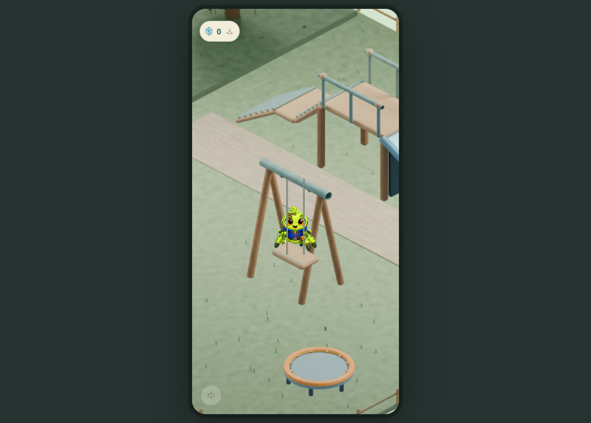
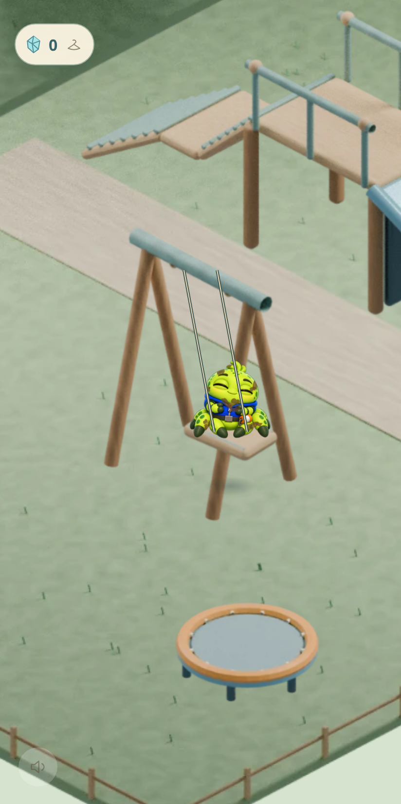
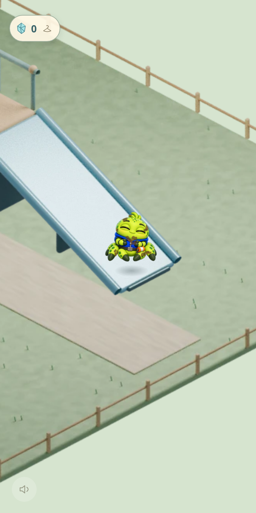

Download Little Bob 1.1.0 APK2.27 MB · Same package and signing certificate as 1.0.1. No new permissions. Packaged game assets work offline.
Install as an update
- Download on the Android phone and open the APK from Downloads.
- Allow this browser or file manager to install apps if Android asks. Samsung Auto Blocker may need temporarily disabling for installation.
- Choose Update. Keep the existing Little Bob installation and its app data.
- Open Bob, visit his backyard, and pan beyond the garden into the continuous playground.
Do not uninstall or clear app data. The existing saved-progress origin and keys remain unchanged.
What to try
Tap the raised walkway and let Bob climb. Try the slide, bring him to the swing, or put him on the trampoline. Leave him alone and watch what he chooses. Grab, throw, pan, web and return indoors as before.
The four families and full return route passed trusted-touch browser tests. Compilation, signatures, asset integrity and a lifecycle-adapter simulation passed. Actual Android installation, save continuity, sensors and Samsung performance still need your fingers.

Runtime-rendered overview; camera/body arrangement is a capture fixture, not gameplay proof.

Complete swing framing; Bob boarded through trusted touch and native physics.

Corrected baked framing includes the whole slide end.
Protected fallback
Original frozen 1.0.1 APK remains unchanged.
If XIV disappoints after installation, use the 1.0.1 recovery update. Its game bundle is byte-identical to frozen 1.0.1; only Android’s version code matches the candidate so an ordinary signed replacement is possible. Do not uninstall. Installation of this recovery route still needs handset confirmation.
Implementation and QA report · APK integrity and signing · Actual browser interaction evidence · Browser candidate
Package com.spideystudios.littlebob · Version code 3. This remains a candidate until Management accepts it.